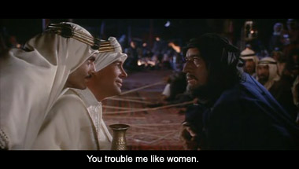

Lawrence of Arabia (1962)
zaterdag 10 mei 2003 | 5 sterren
Niet te veel over praten of lezen: gewoon bekijken, dit meesterwerk.
IMDB: Lawrence of Arabia (1962)

zaterdag 10 mei 2003 | 5 sterren
Niet te veel over praten of lezen: gewoon bekijken, dit meesterwerk.
IMDB: Lawrence of Arabia (1962)
